B's Recipes
Op deze website kan je gemakkelijk een recept vinden voor het avondeten die bij jou past. Je kan kiezen tussen; vlees, kip of vegetarisch. Verder staat er bij elk recept bij hoe pitig het is, hoe lang de bereidingstijd is, hoeveel pannen je nodig hebt en voor hoeveel personen het is.
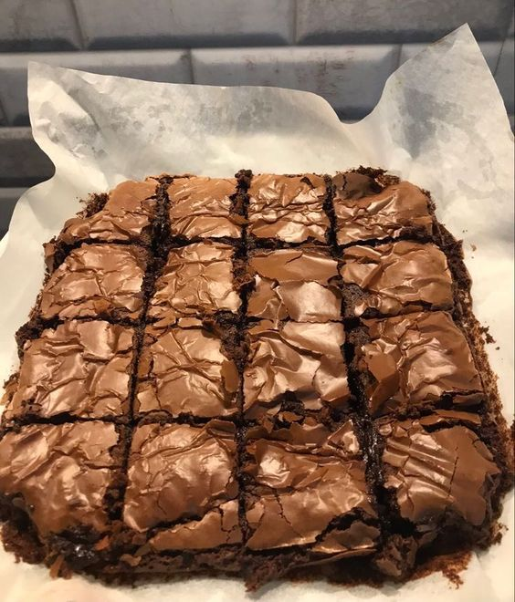
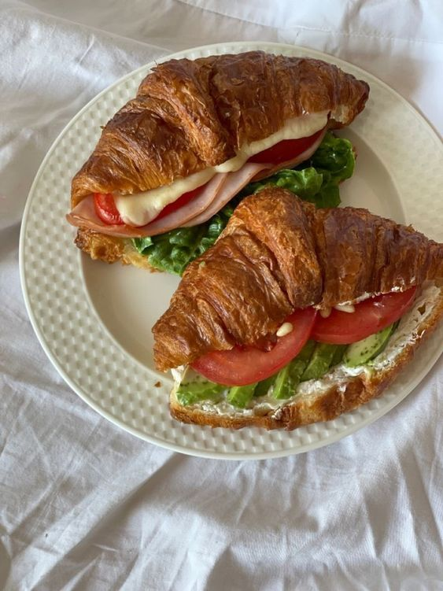
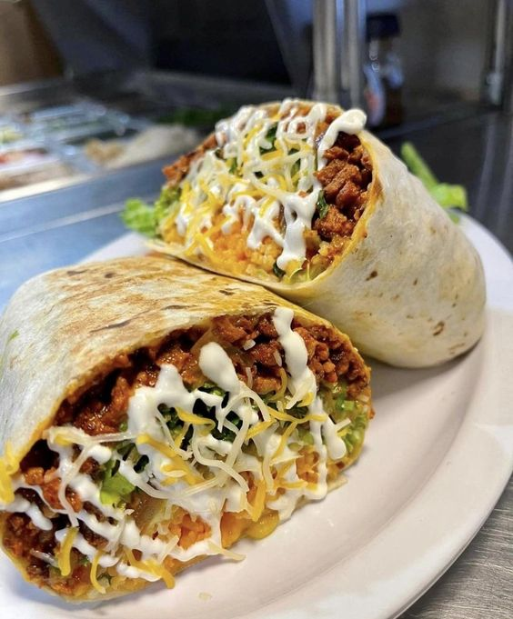
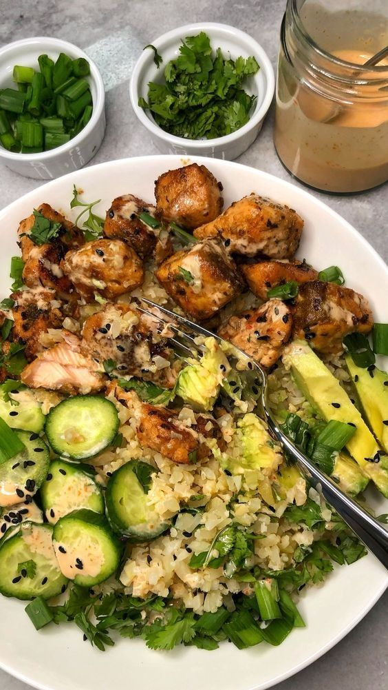
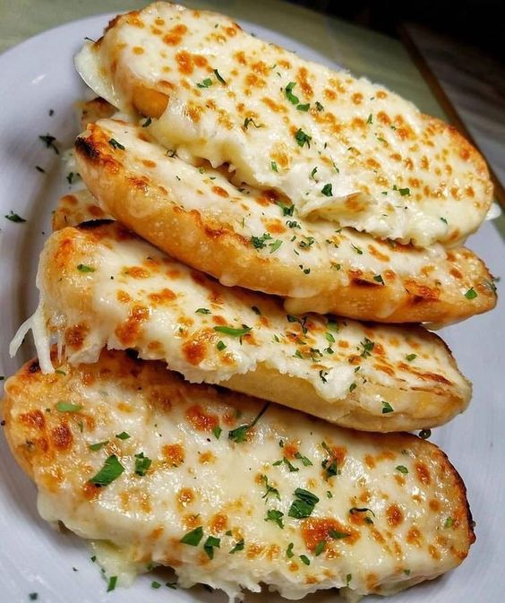
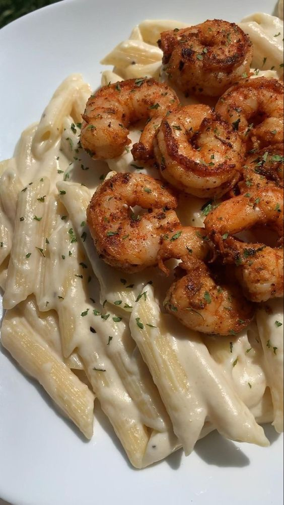
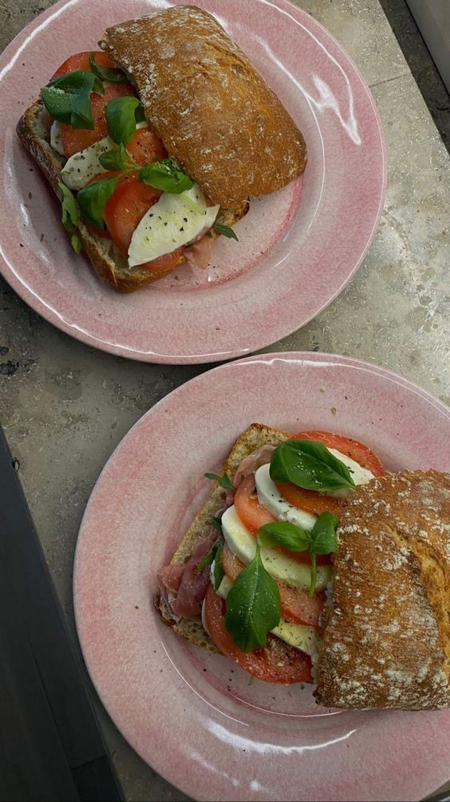
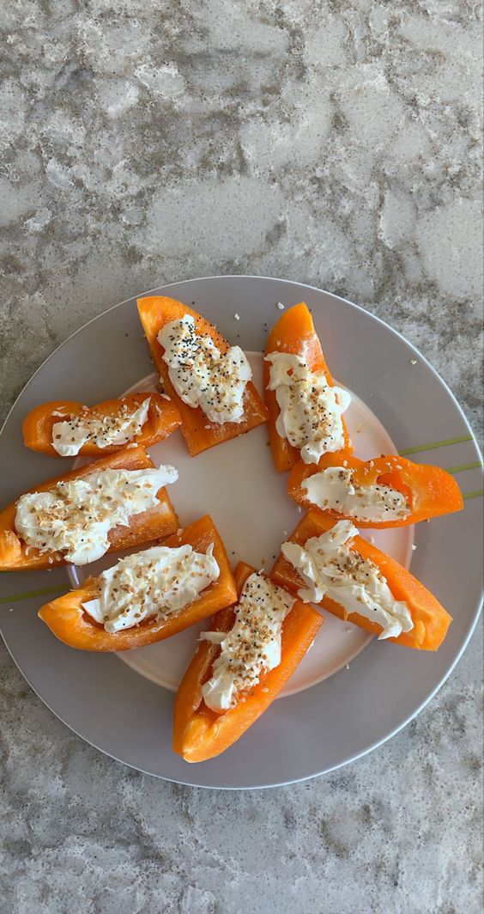
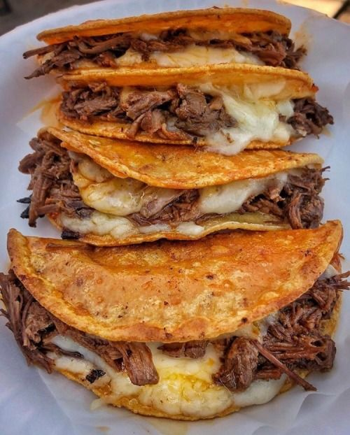
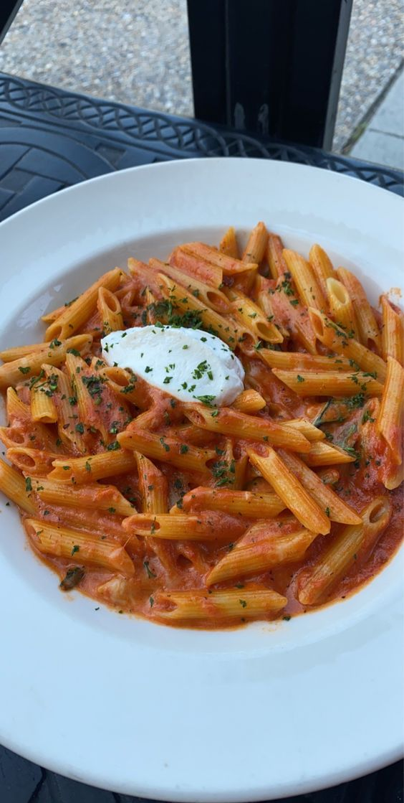
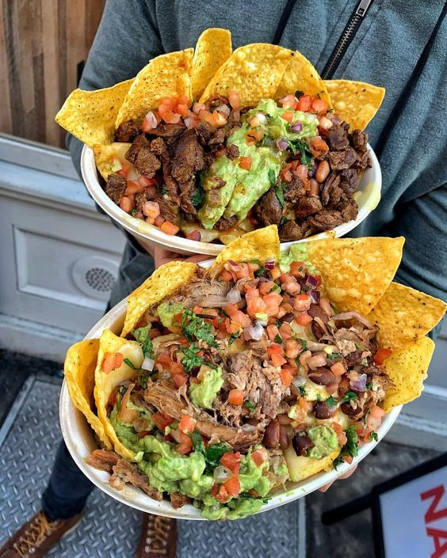
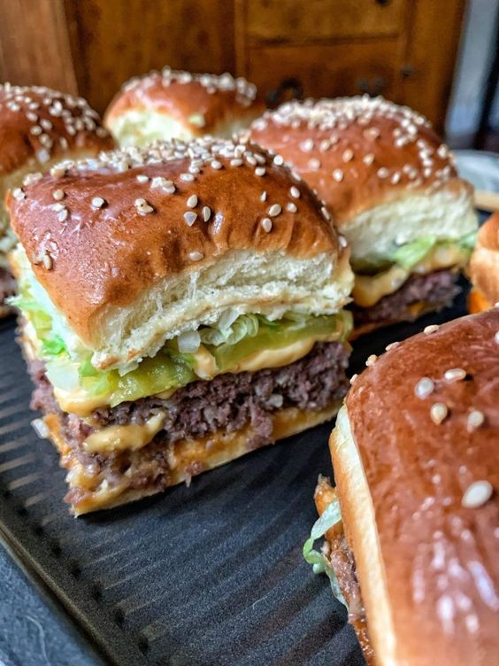
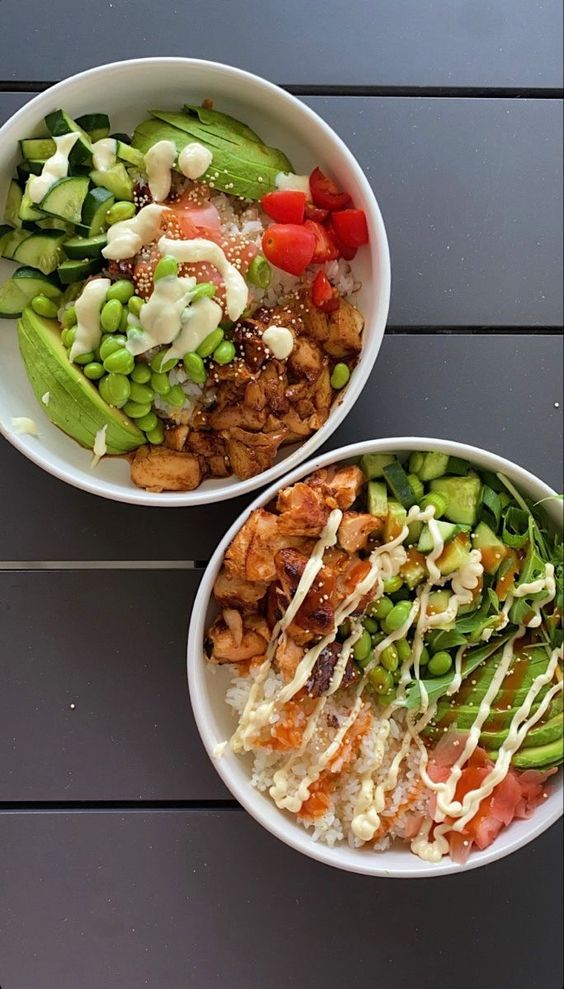